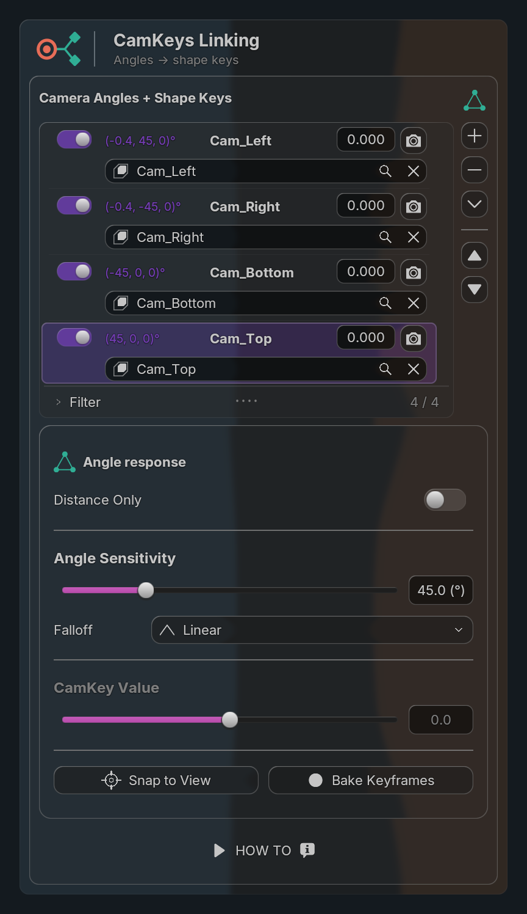
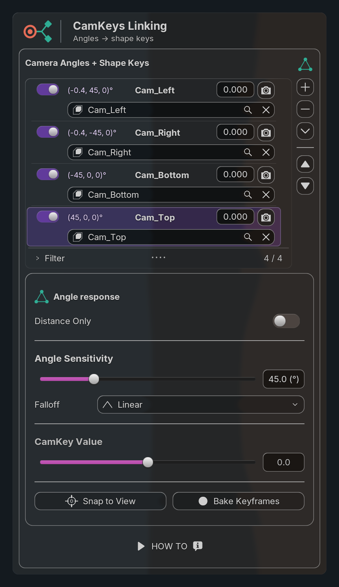
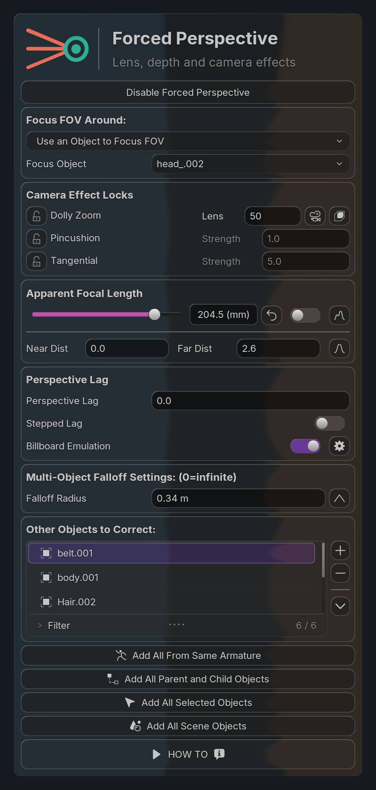
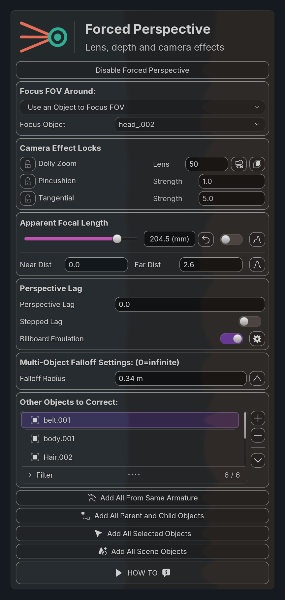
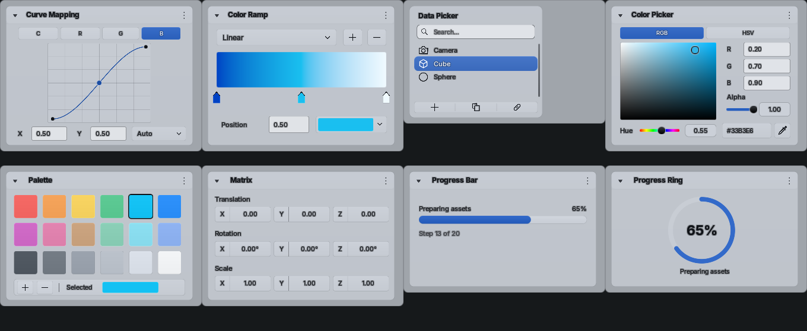
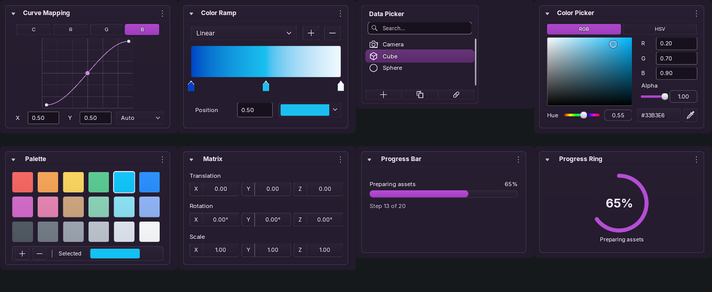

← OverviewReadable defaults, same Blender theme
Both columns use Uraraka’s live Blender widget colors, Follow Blender Colors enabled, identical saved-scene properties, dimensions and backdrop. The change is in the shared Beyond UI defaults. Purple fills stay purple; text gets a readable lavender ink. Dividers, field rims and secondary text are stronger. The darker glass tint remains translucent.
CamKeys Linking
Before

After

Forced Perspective
Before

After

Light and custom theme checks
Actual Blender renders; bound color values stay unchanged. Geometry, textures and reference fixtures remain retained. These are synthetic theme fixtures, not new approved style references.


391 unit tests passed. GPU theme checks passed in Blender 5.2.2 / Metal; no focus activation recorded. The open scene and current CamKeys preset were preserved.
Audit evidence and limits · Theme roles and overrides